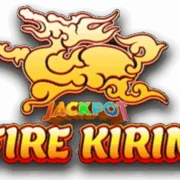

INDEPENDENT GAME GUIDES · 18+
Find your
next game world.
Take a closer look at the games behind the icons, from Juwa’s Fortune Lion to Fire Kirin’s Baby Octopus. Read the stories or find help with your Clash Casino account.


Game blog
7 articles
Juwa
Three ways to play Juwa


Fire Kirin
Inside two Fire Kirin fish games

Orion Stars
Where to find keno on Orion Stars

River Sweeps
A closer look at River Sweeps fishing

Juwa 2.0
Which games do the two Juwas share?

Milky Way
Ocean King and the Milky Way lineup

Game Vault 999
Three Game Vault covers worth a closer look
PLAYER PATH
From sign-up to the first spin
Clash Casino keeps one wallet for every game. Pick a step to see what happens on clashcasino.us.
Create an account
Create your Clash Casino account
Open Sign Up on Clash Casino. Enter a username, email, and password of at least 8 characters, then confirm the password. An optional 4-digit invite code can be added. Tick the Terms and Privacy checkbox and tap Register.
WALLET GUIDE
One wallet, then play
Clash Casino says there are no cashiers and no long waits. You buy wallet balance in US dollars, move credits into a game, then redeem back when you are done.
Log in to Clash Casino1 Open or return to your account
Use Sign Up or Login. Login accepts a username or email plus password. New accounts need an email one-time code before they can be used.
2 Fund the wallet
Purchases are made in US dollars through Clash Casino’s third-party processor, from the amounts shown at checkout. Balance is credited once the processor confirms. Review totals before you confirm. Purchases are final once confirmed.
3 Add a game and send credits
When you add a game, Clash Casino creates that game account and sends you its login. Moving wallet balance into a game (adding credits) and back to the wallet (redeeming) can take a few moments. If a transfer clearly fails, the amount returns to the wallet.
4 Cash out when you are ready
Cashouts need identity verification with the payment processor and go to the saved payout method in your own name. The homepage mentions cashouts to your card. Wallet history is listed on the History page. For help, Clash Casino lists 24/7 live support.
CLASH CASINO FAQ
Questions, answered
Independent answers from Clash Casino’s public site and Terms. This page does not collect a password. Entertainment only. 18+.
How does a player start on Clash Casino?
Go to clashcasino.us, choose Sign Up or Play Now, create an account, verify the email with a one-time code, then log in. After that you can buy wallet balance, add a game, send credits in, and play.
What do I need to create an account?
Username, email, password of at least 8 characters, and a matching confirmation. You must agree to the Terms and Privacy Policy. An invite code is optional and uses 4 digits. Clash Casino allows only one account per person.
How do I log in after I register?
Open Login, enter your username or email and password, then continue. Use Forgot your password if you need a reset. The login button stays disabled until both fields are filled. Returning players see “your games and balance are where you left them.”
Why do I have to verify email?
The Terms say Clash Casino verifies your email with a one-time code before the account can be used. Keep that email current. Account issues can go to relaycoms@gmail.com. Do not send passwords through this guide.
How do deposits work?
You buy Clash Casino wallet balance in US dollars through a third-party payment processor, choosing from the amounts offered at checkout. Credits appear after the processor confirms. There are no cashiers on the floor of the site — recharge is from your account. Check the total before you confirm.
Is there one wallet for every game?
Yes. Clash Casino describes one wallet for all games. You add credits from that wallet into a game to play, then redeem game balance back to the wallet from the game card. Transfers are handled by the game platform and may take a few moments.
Are bonuses added to a purchase?
No. Clash Casino’s Terms currently say no bonuses are offered, and bonuses are never added to purchases or cashouts. Any future bonus would be described on the site and in the Terms first.
How do cashouts work?
Cash out wallet balance after identity verification with the payment processor. Payouts go to the default method saved there, in your own name. The register page mentions cashouts to your card. Amounts are held while a cashout is processed and may be reviewed manually. Chargebacks can remove matching balance.
What games can I play?
Clash Casino lists slots, fish games, sweepstakes favorites, and card games. This guide shows 57 Juwa777 covers in slots, fish games, and keno. Games come from third-party platforms. When you add a game, Clash Casino creates that game account and sends you its login.
Do I play inside Clash Casino or in a separate game account?
Both. Clash Casino holds the wallet. Each game lives on a third-party platform. Adding a game creates that platform account. Play happens after you send credits in. Game balances, results, and availability are set by the game platform.
Does this arcade guide log me into Clash Casino?
No. Clash Arcade is an independent guide. Covers, the cover reels, and this FAQ open in the browser with no Clash Casino password. Join, login, deposits, and play happen on clashcasino.us.
Who can use Clash Casino?
Players must be at least 18, or the age of majority where they live if that is higher. Use the site only where it is lawful. Duplicate, shared, or third-party accounts may be closed. Play only with money you can afford to spend.
Where do I get help?
Clash Casino lists 24/7 live support on the homepage. Terms questions go to relaycoms@gmail.com. If you want a break or to close an account, contact them. If play is a concern, the Terms point to the National Council on Problem Gambling.